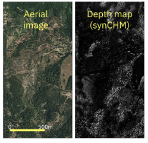
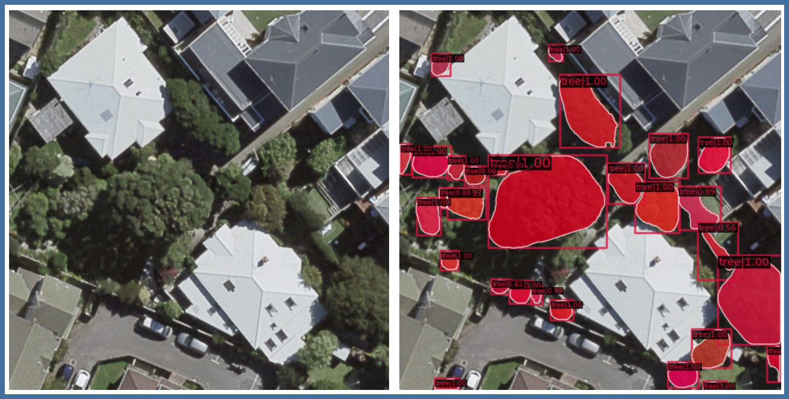
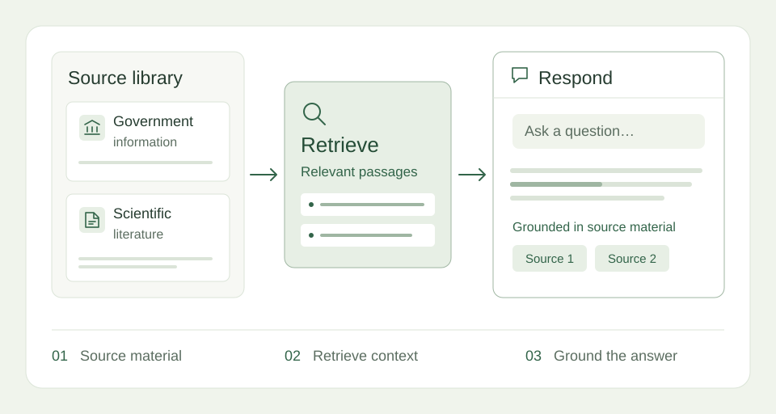
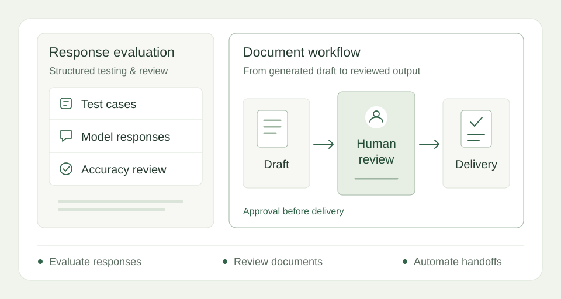
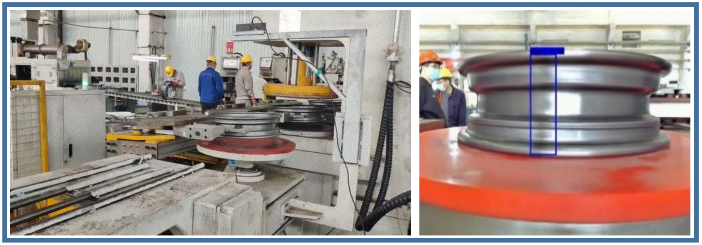
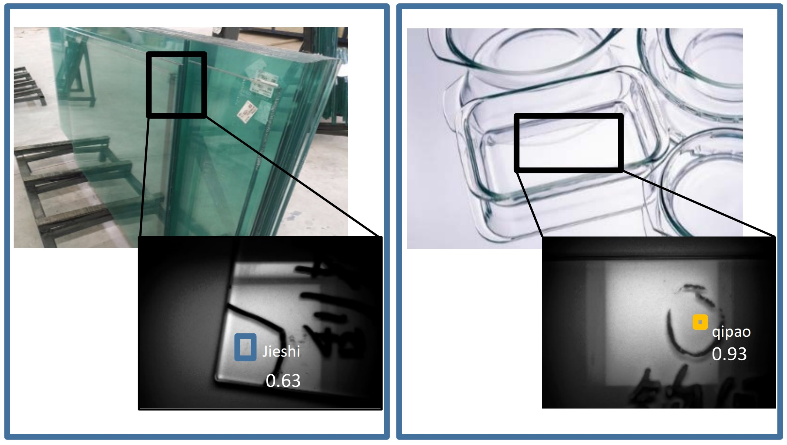
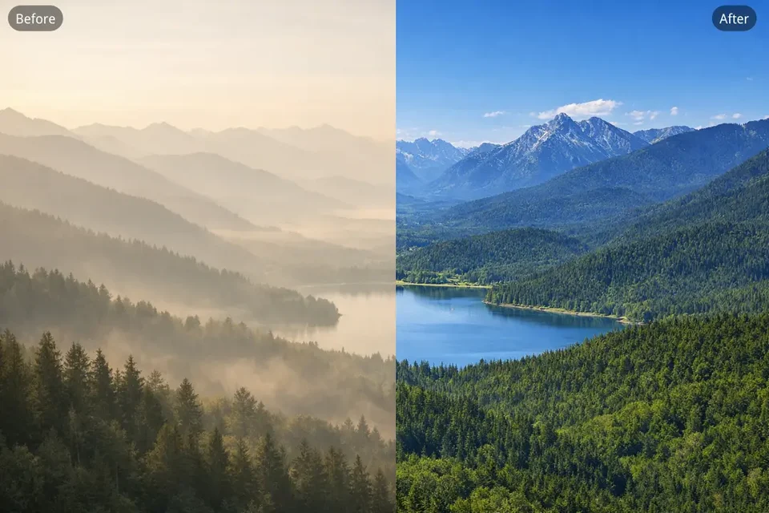

Current work
Dynamic forest mapping
Predicting canopy height from aerial imagery, with LiDAR for training and validation.
Solve real-world problems with AI and machine learning.
PhD in Artificial Intelligence · Victoria University of Wellington

Current work
Predicting canopy height from aerial imagery, with LiDAR for training and validation.

Doctoral research
Teaching models to find individual objects and trace their boundaries in complex aerial images.

Conversational AI
Making government information and scientific literature easier to explore through conversation.

AI workflows
Evaluating chatbot responses and connecting AI-generated drafts with human review and delivery.


Applied computer vision
Finding weld seams and glass defects with computer vision in industrial settings.

Image restoration
Exploring how deep learning can recover colour, texture and detail in hazy images.
Nov 2025 — Present
Wellington, New ZealandDragonfly Data Science
Develop ML models for aerial imagery and LiDAR.
Aug — Oct 2025
Auckland, New ZealandElementX
Evaluated LLMs and automated document workflows.
Mar — Aug 2025
Wellington, New ZealandVictoria University of Wellington
Developed instance segmentation methods for tree crowns.
Oct 2024 — Mar 2025
Wellington, New ZealandCallaghan Innovation
Improved RAG workflows for GovGPT and PaperBoi.
Oct 2021 — Feb 2025
Wellington, New ZealandVictoria University of Wellington
Researched object detection and instance segmentation.
Oct 2021 — Feb 2025
Victoria University of Wellington
Sep 2018 — Jun 2021
Shandong University of Finance and Economics
Sep 2014 — Jun 2018
Shandong University of Finance and Economics
Published as Ziyi Sun · 8 publications
IEEE Transactions on Emerging Topics in Computational Intelligence. 10(1), 51–65. Early access: 2025.
Publisher ↗PRICAI 2025: Trends in Artificial Intelligence. Lecture Notes in Computer Science, vol. 16455, pp. 298–314. Springer.
Publisher ↗IEEE Journal of Selected Topics in Applied Earth Observations and Remote Sensing. 18, 14752–14765.
Publisher ↗Journal of the Royal Society of New Zealand. 55(6), 1854–1879.
Publisher ↗ISPRS Open Journal of Photogrammetry and Remote Sensing. 17, 100095.
Publisher ↗38th International Conference on Image and Vision Computing New Zealand (IVCNZ). pp. 1–6.
Publisher ↗ACM Transactions on Multimedia Computing, Communications, and Applications. 18(2), Article 58, pp. 1–23.
Publisher ↗Computer Vision and Image Understanding. 203, 103133.
Publisher ↗Explore my experience, skills and research. Pick a question, or ask your own.
Prepared answers from Zoey’s profile and publications.
For research discussions and professional enquiries.